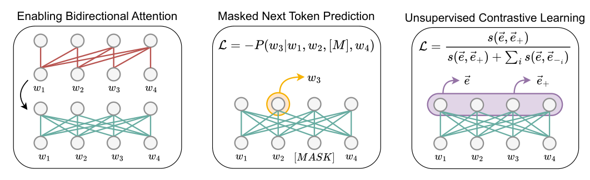

PAPER NOTE · REPRESENTATION LEARNING
LLM2Vec: Large Language Models Are Secretly Powerful Text Encoders
LLM2Vec：大型語言模型其實是強大的文字編碼器
核心價值：LLM2Vec 證明現有的強大 Causal LLM（如 Llama、Mistral）經過簡單的無監督改造後，就能成為通用文字嵌入 (Text Embeddings) 模型，挑戰以往由 Encoder-only 模型（如 BERT、RoBERTa）在向量表示任務中的優勢。
主要貢獻：
- 提出三步驟框架：啟用雙向注意力 (Bidirectional Attention)、Masked Next-Token Prediction (MNTP)，以及無監督對比學習。
- 在 MTEB (Massive Text Embedding Benchmark) 上展示以 Causal LLM 為基礎的嵌入模型超越傳統雙向編碼器架構。
- 展現資料與計算效率，不需要從頭訓練模型。
研究痛點：近年大型語言模型多採用 Causal Decoder-only 架構，適合生成文字；然而在文字檢索、聚類、語義相似度等表示學習任務上，傳統雙向 Encoder-only 模型（如 BERT 系列）長期表現更穩定。
核心洞察 (Key Insight)：現成 LLM 已具備龐大的世界知識和語言理解能力，限制在於 Causal Mask 讓模型無法充分捕捉整句的對稱語義表示。若將現有 LLM 改造成雙向編碼器，便能發揮其表示能力。
LLM2Vec 以三個輕量步驟轉換 Causal LLM：
- 啟用雙向注意力 (Enabling Bidirectional Attention)：移除 Causal Mask，讓每個 Token 都能看到句子中的完整上下文。
- Masked Next-Token Prediction (MNTP)：透過類似 MLM 的任務進行持續預訓練 (Continued Pre-training)，使模型適應雙向資訊。
- 無監督對比學習：以 SimCSE 為延伸，微調句向量空間，拉近同義文本並推遠不同文本。

評估基準：MTEB (Massive Text Embedding Benchmark)，涵蓋檢索、分類、聚類等數十個任務。
關鍵發現：
- 以 Llama-3 或 Mistral 為基礎模型套用 LLM2Vec 後，在 MTEB 總分上超越許多專門訓練的 embedding 模型。
- 筆記指出，透過此方法，較小的開源 LLM（如 7B 級別）也能勝過許多複雜架構。
侷限性：移除 Causal Mask 並進行微調需要一定的 GPU 記憶體與算力；此外，極長文本的建模仍受限於原基底模型的上下文視窗。
未來展望：探索將此技術結合多模態大型模型，或應用於更具挑戰性的跨語言檢索任務。
研究省思： 這篇論文最讓人興奮的地方在於「架構的重用性 (Reuse)」。我們常常覺得 Decoder-only 和 Encoder-only 是截然不同的兩條路，但作者透過巧妙的解禁注意力機制與對比微調，直接打通了兩者的任督二脈。這提醒我們在做研究時，多去思考現有強大工具的「潛能解鎖」，往往比從零開始訓練更具性價比。